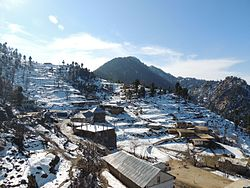
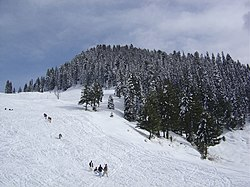
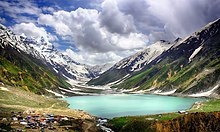
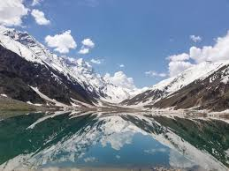
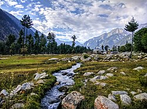
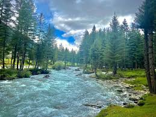

Swat Velley
Swat District, also known as the Swat Valley, is a district in the Malakand Division of Khyber Pakhtunkhwa, Pakistan. Known for its stunning natural beauty, the district is a popular tourist destination and tourist attraction. With a population of 2,309,570 per the 2017 national census, Swat is the 15th-largest district of Khyber Pakhtunkhwa.Which is not so much dense populated as other cities of Pakistan, thats why the people know each other very well and belive to live unite.Click For More Details
 Kumrat Valley
Kumrat is a valley in the Upper Dir District of the Khyber Pakhtunkhwa province of Pakistan. There is around 45 minutes drive to Kumrat Valley from the town of Thal on the banks of the Panjkora River. It is among the most popular tourist spots in Khyber Pakhtunkhwa. Every summer season, thousands of tourists from different areas of the Pakistan and abroad visit Kumrat Valley for its greenery and cool weather.[citation needed] Around Eid al-Fitr holidays, around 2,000 vehicles enter the region on a daily basis. It can only be accessed via four-wheel vehicles, as the road leading to it is unmetalled Click For More Details
 Malam Jabba
Malam Jabba is a hill station and ski resort in the Hindu Kush mountain ranges. It is nearly 40 km far from Saidu Sharif in the Swat Valley of the Khyber Pakhtunkhwa province of Pakistan. It is 314 km far from Islamabad and 51 km from Saidu Sharif Airport.Malam Jabba is home to one of the two ski resorts in Pakistan, which means the ski can be performed here as well the other being situated in Naltar, Gilgit Baltistan. Along the main Madyan-Kalam road, a pivotal juncture emerges at Manglor town, approximately 12 km from Saidu Sharif the famous Saint of the Islam . Click For More Details
 Saif-ul-Mulook Lake
Saiful Muluk is a mountainous lake in northern Pakistan, located at the northern end of the Kaghan Valley, near the town of Naran in the Saiful Muluk National Park. At an elevation of 3,224 m (10,578 feet) above sea level, the lake is located above the tree line, and is one of the highest lakes in Pakistan. Saiful Muluk is located in the Mansehra district of Khyber Pakhtunkhwa, about 9 kilometres (5.6 mi) north of Naran, in the northern part of Kaghan Valley. Malika Parbat, the highest peak in the valley is near the lake. The lake is accessible from the nearby town of Naran during the summer season but access during winter is limited, as heavy snowfall and landslides threaten to cutoff the lake from other regions. Click For More Details